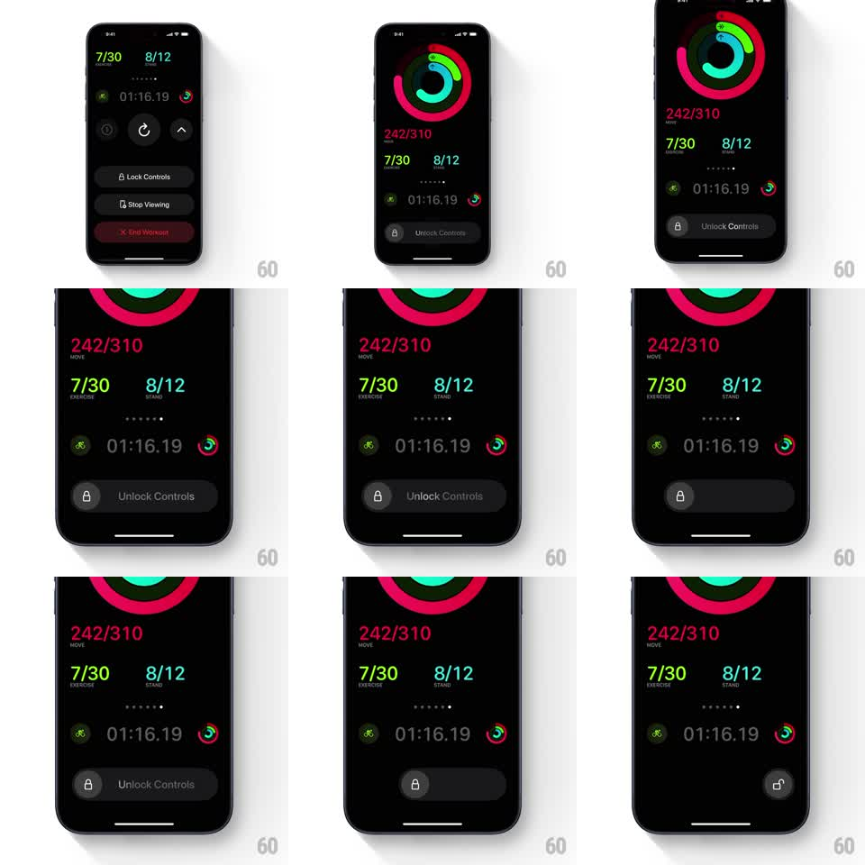

Media
Frame-by-frame

Rebuild this interaction 1:1: Apple Fitness's slide-to-unlock - a dark pill with a lock icon and "Unlock Controls" label; dragging the lock right fades the label away, and at the end of travel the lock springs open and workout controls appear.

Rebuild this interaction 1:1: Apple Fitness's slide-to-unlock - a dark pill with a lock icon and "Unlock Controls" label; dragging the lock right fades the label away, and at the end of travel the lock springs open and workout controls appear. ## Integration Integration: stack-agnostic spec - springs given as stiffness/damping, timed motions as duration + curve; map every value to your framework and animation library of choice. ## Scene Dark workout screen: activity rings (pink/green/teal), "242/310 MOVE", "7/30 EXERCISE", "8/12 STAND", elapsed timer "01:16.19" with small ring badges. Bottom: a full-width dark pill with a lock icon in a circle at its left edge and "Unlock Controls" text. Unlocked: the pill becomes "Lock Controls" plus Stop Viewing and a red End Workout button. ## Motion spec Pattern: slide-to-commit with fading label + icon morph. - Drag the lock knob: it tracks the finger 1:1 along the pill; the "Unlock Controls" label fades proportionally to drag distance (opacity 1 -> 0 across ~70% of travel). - Under ~85% travel on release: knob springs back (spring ~350/25, ~250ms), label fades back in. - Past threshold: knob accelerates to the end (~150ms), lock icon morphs shackle-closed to shackle-open (~200ms), success haptic. - The pill then crossfades to the controls stack (Lock Controls, Stop Viewing, End Workout) sliding up with 60ms stagger (~300ms). - Locking again reverses to the pill. ## Calibration - Label fade is distance-mapped, not time-mapped - slow drags fade slowly. - The threshold (85%) must feel deliberate; accidental half-swipes always snap back. ## Reduced motion Knob slides without label fade; lock swaps icon state. ## Don't miss - The knob never leaves the pill's bounds; travel ends flush with the right edge. - End Workout is red and visually separate from Lock/Stop.